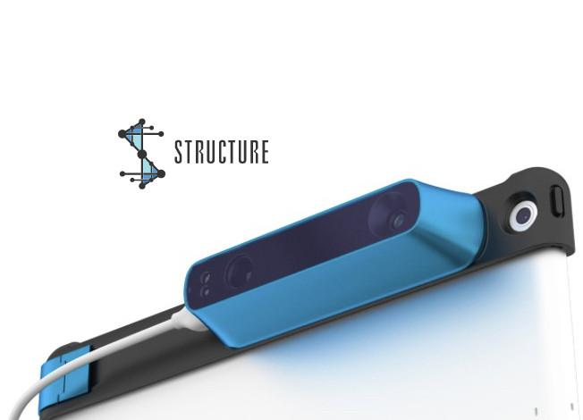

April 2017, I attended SIGGRAPH for the first time. There was much going on in the world of VR/AR especially in the area of integrating haptics, from deformable controllers to micro-voltage feedback systems. I was skeptical about using so many different external add ons to VR systems. Maybe in the future, we will be so accessorized with wearables that one more doesn’t hurt.
Personally, I like to keep it at a minimum. Yet to my surprise, on my last day there, I got a preview of an amazing attachable: the Structure Sensor by Occipital. Stereoscopic cameras are not new in the tech world. But the Structure Sensor allows you to directly input the mesh of your environment with a digital environment, integrating shadows and colliders very easily.

Soon enough, I got the chance to develop on it! Occipital provides Xcode and Unity-based SDK packages for their Structure Sensor. With my free time limited to a few hours on weekends, I chose Unity to begin my first (and number one dream) project: a treasure hunting game.
Growing up, my all-time favorite RPG was Final Fantasy IX. Why not FF7 or FFX you ask? Because FF9 has all the side quests a nerd can ask for. I spent hours going to marshes and catching frogs, getting pieces of maps in Chocobo Hot n Cold, etc. How fun would it be to pretend to ride on a chocobo while looking for buried treasure? Obviously, I can’t ride on chocobos in real life, nor am I able to use chocobos for copyright reasons. However, it gave me this idea for my own augmented reality game: “Stomping Ground”.
[game video]
“Stomping Ground” allows you, a knight, to “gallop” on your own personal steed, fight ghastly creatures, and collect treasures to get better steeds. However, you aren’t going to be sitting in a VR chair that simulates a rough ride on saddleback. No. You are going to go Monty Python King Arthur style with the help of the Unbounded Tracking (UBT) system of the Structure Sensor. You will create your own stomping ground.
You’re probably wondering how development went. One of the biggest questions that VR/AR developers need to ask first is: why is developing this concept in VR/AR better than just creating it for Desktop? This question can lead us into the deepest caves of debate for commercially available AR games. But for my RPG-style game, AR adds a level of real body motion, increasing your adrenaline in fight or flight moments.
As I was letting my teenage sister (a growing programmer herself) beta test my game, we both let out a scream. Right behind us, an enemy spawned and began letting out its attacking sfx. We both jumped to safety, only to laugh at ourselves and the empty bedroom space. Although the RPG system is extremely familiar to other RPG mediums, where you attack an enemy and collect treasure, VR/AR allows us to take our senses into a whole new world.
Being a one-man team, I handled everything from coding battle system to modeling. Although the sfx and most of the 3D models I used were gotten under royalty free license, I still had to modify them on my own. I will save topics like ‘Programming an efficient battle system’ and ‘Creating the perfect logo’ for another blog. Here, I wanted to focus on three things about this AR development.
First and foremost, I wanted to point out a sad realization after multiple failed attempts. AR is well-known for the ability to manipulate the real world, i.e. face filters. AR has been known to integrate tracking algorithms for real world application; however, people have come up with what I call “soft” AR: using the webcam feed just as a display in the background. While the Structure Sensor uses depth information and does display the camera footage in real-time during scanning apps, the UBT package I used has not been able to display the iPad camera footage as a backdrop since it clashes with the tracking rate (confirmed on the Structure Sensor developer’s forums). Another challenge I’d come across eventually is during app launching: using the webcam would require another reason to access the camera. There must be a way to integrate both, but for now, I have not set it aside.
Second, the UBT system comes with the ability to tap on the screen to transport you to a place further in the field. This was really useful especially when my personal office space was too small to fit within the virtual playing bounds. However, the difficult part came when I integrated Unity UI touch interface. Touching a UI button on screen also called the ability to teleport. Within the UBT package, there was already a line of code that prevented a teleport when the player selected on an object in the UI layer. Yet, it wasn’t working. Instead of using the native UI Unity offered, I used game objects (placed as children under the camera object) with colliders. I simply changed the OnTapGesture function to notice these game objects as a priority over tapping. Sometimes, you need to make small tweaks of your own to get things working.
Last, I came across an error and resolved it with a lesson I hope people can find useful. When changing between scenes, the tracker “loses” information between the frames. Part of the Structure’s math found in StructureTransformController.cs requires a division by the variable “timeSinceLastTrackerUpdate”. But loading a new scene results in that variable to return as zero. And just as our good ol’ 4th grade teacher said, you cannot divide by zero. I quickly just added an if statement to catch if it equals zero, make it equal to another very small number, i.e. 0.1.
I’d like to conclude with the potential updates I would love to bring to my game. For example, I’d like the player to scan their room and plant treasure in places like couches or park benches. This is feasible with using the Structure’s scanning feature rather than UBT. Another awesome addition is a multiplayer feature, where you and your friends compete for the highest prize. I would love to create a more developed storyline behind why your horses are actually hobby horses and where these ghost enemies come from (No-face, is that you?). There is so much I can run with, yet so little time. I hope you enjoyed this article!
If you’d like to know more about this AR app, feel free to reach out to me! Start clearing out your living room because things can get a little messy.
You can check out the Oculus website at https://structure.io/
RPG Tutorial I used is found in this youtube playlist.